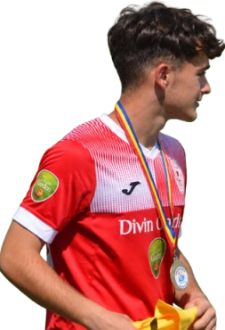
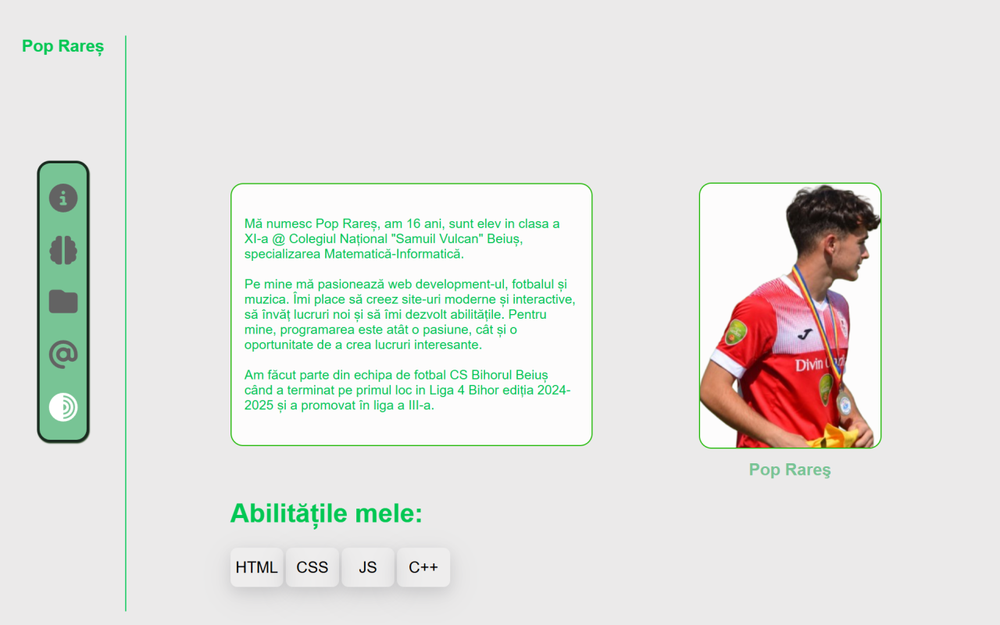

Mă numesc Pop Rareș, am 16 ani, sunt elev în clasa a XI-a la Colegiul Național "Samuil Vulcan" Beiuș, specializarea Matematică-Informatică.
Pe mine mă pasionează web development-ul, informatica, fotbalul și muzica.
Îmi place să creez site-uri moderne și interactive, să învăț lucruri noi și să îmi dezvolt abilitățile. Pentru mine, programarea este atât o pasiune, cât și o oportunitate de a crea lucruri interesante.
Am făcut parte din echipa de fotbal CS Bihorul Beiuș când a terminat pe primul loc in Liga 4 Bihor ediția 2024-2025 și a promovat în liga a III-a.


Un site personal unde îmi prezint pasiunile, proiectele și lucrurile care mă reprezintă.
O idee nouă devine realitate, rămâi aproape pentru lansare.
Făcut manual
© Pop Rareș 2026